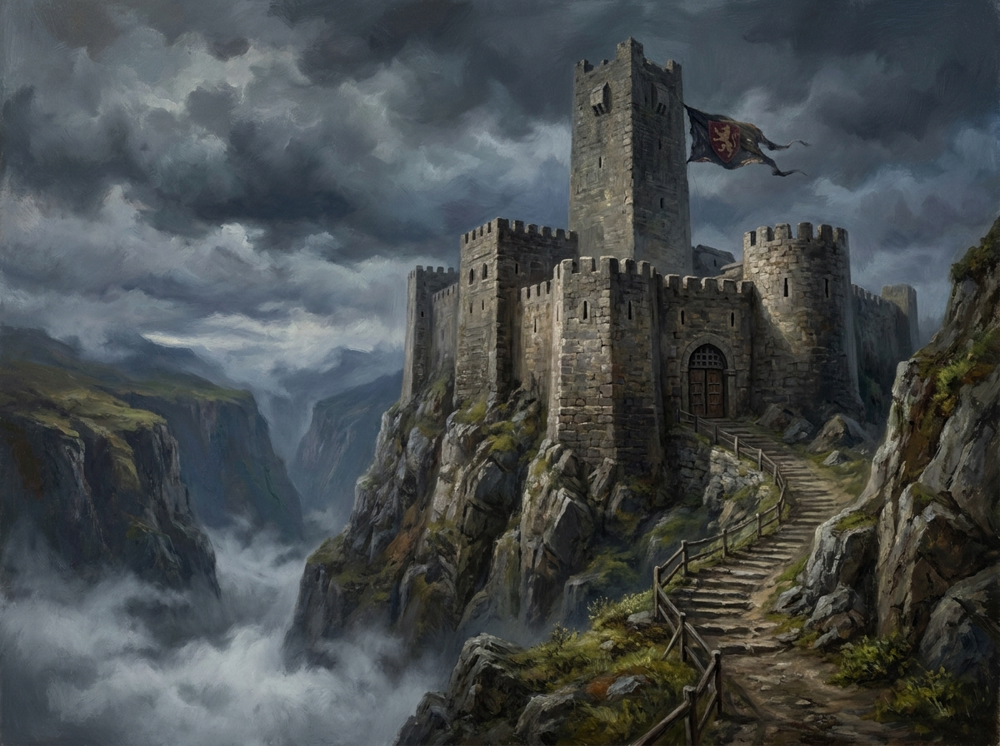
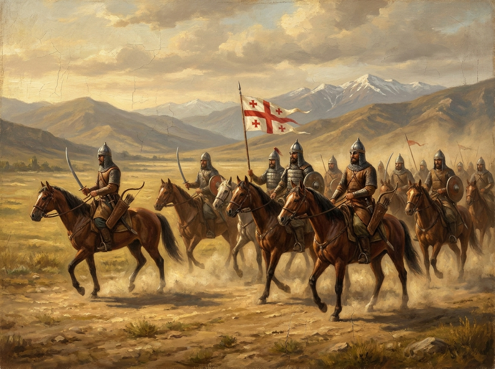

სამეფო რეფორმები
ორი გადამწყვეტი ნაბიჯი, რომლებმაც დაქსაქსული სამეფო ცენტრალიზებულ, საბრძოლო-მზად სახელმწიფოდ აქცია.
ბრძოლა ფეოდალურ დაქსაქსულობასთან
დავითის მეფობის დასაწყისში საქართველოს დიდგვაროვნები საკუთარ სამფლობელოებში ფაქტობრივად დამოუკიდებლად მოქმედებდნენ, ხშირად სამეფო ხელისუფლების საწინააღმდეგოდაც. ცენტრალური ხელისუფლების გარეშე ქვეყანა ვერ უმკლავდებოდა გარეშე საფრთხეს.
დავითმა თანმიმდევრულად შეზღუდა ყველაზე ძლიერი საგვარეულოების გავლენა — მათ შორის ბაღვაშების საგვარეულო, რომლის მეთაურიც, ლიპარიტ ბაღვაში, დევნილ იქნა ქვეყნიდან. კონფისცირებული მიწები და შემოსავლები სამეფო ხაზინას შეემატა, ხოლო მათ ადგილას საჯარო სამსახურში დავითმა დანიშნა თანამდებობის პირები, რომელთა ერთგულებაც წარმომავლობაზე კი არა, პირად ერთგულებასა და ღვაწლზე იყო დამოკიდებული.
- ურჩი დიდგვაროვნების მიწების კონფისკაცია და ცენტრალიზაცია
- ლიპარიტ ბაღვაშის დევნა და ბაღვაშების გავლენის მოსპობა
- ერთგულებაზე დაფუძნებული ახალი მოხელეთა ფენის ჩამოყალიბება
- სამეფო ხელისუფლების ცენტრალიზაცია მთელი ტერიტორიის მასშტაბით


სამხედრო რეფორმა და ყივჩაღთა ჩამოსახლება
ფეოდალური ლაშქარი, რომელიც სამეფოს დიდგვაროვნების ნებაზე იყო დამოკიდებული, არც სანდო იყო და არც საკმარისად ძლიერი მუდმივი საფრთხის — სელჩუკური თარეშების — მოსაგერიებლად. დავითს სჭირდებოდა ჯარი, რომელიც პირდაპირ მეფეს ემორჩილებოდა.
ამ ამოცანის გადასაჭრელად დავითმა ჩრდილო კავკასიიდან საქართველოში ჩამოასახლა ყივჩაღთა დაახლოებით 40 000 ოჯახი — ყოველი ოჯახი ერთ აღჭურვილ მხედარს გამოყოფდა. ასე შეიქმნა მუდმივმოქმედი, მეფის უშუალო ბრძანებას დაქვემდებარებული საკუთარი არმია, რომელიც აღარ იყო დამოკიდებული ცალკეული ფეოდალების კეთილ ნებაზე.
- ~40 000 ყივჩაღური ოჯახის ჩამოსახლება ჩრდილო კავკასიიდან
- თითო ოჯახი = ერთი აღჭურვილი მხედარი მუდმივ არმიაში
- ჯარი პირდაპირ მეფის, და არა ცალკეული დიდგვაროვნების, ხელქვეითი
- საფუძველი შეექმნა შემდგომი გამარჯვებებისთვის, დიდგორის ჩათვლით
ეს რეფორმები არ ყოფილა მარტო
საეკლესიო კრება 1103 წელს და ერთიანი სამოხელეო აპარატის შექმნა იმავე ცენტრალიზაციის პროცესის ნაწილი იყო — ორივემ საფუძველი ჩაუყარა სამეფოს შემდგომ აღმავლობას.
საეკლესიო კრება, 1103
რუის-ურბნისის საეკლესიო კრებამ ჩამოაშორა თანამდებობებს არაკეთილსინდისიერი სასულიერო პირები და ეკლესია სამეფო ხელისუფლებას დაუახლოვა.
სამოხელეო აპარატი
დაინერგა გაერთიანებული საერო-საეკლესიო თანამდებობა — მწიგნობართუხუცეს-ჭყონდიდელი — რითაც სახელმწიფო მართვა ერთ ცენტრში მოექცა.